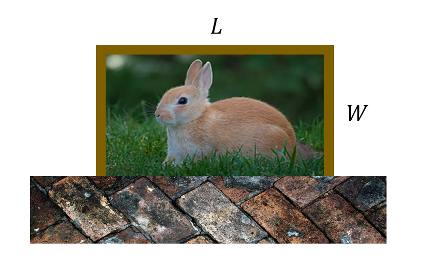
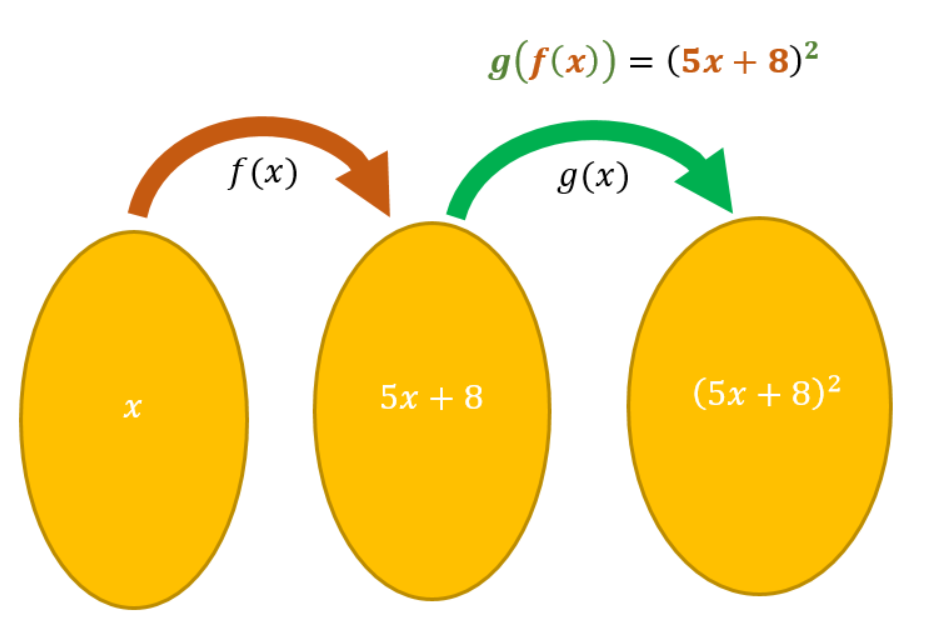

1 Functions
Linear equations and quadratics are two useful ways to algebraically describe the relationship between variables. You might also be familiar with more complicated algebraic expressions for structures like hyperbolae and ellipses, which have forms like \[ \frac{x^2}{a^2} - \frac{y^2}{b^2} = 1, \quad \frac{x^2}{a^2} + \frac{y^2}{b^2} = 1. \] While these specific examples do enable a broader range of modelling, but point to a more general idea for defining algebraic relationships.
1.1 Definition
In school, the idea of functions is often introduced early on through the concept of a ‘function machine’. This is some imagined box which takes in some number \(x\) as an input, carries out some operation \(f\) and then returns another number \(y\) as output.
Mathematically, this would be denoted \(f:x \rightarrow y\) or \(y = f(x)\) which would be read as “\(y\) equals \(f\) of \(x\)” or “the function \(f\) applied to \(x\)”. As an example of how this might look in practice, the function \(f(x) = 2x\) maps values to their double. If \(x = 7\) for instance, the output of the function will be \(f(2) = 14\).
Functions are an important concept in mathematics, and they describe many natural and human-made phenomena. The speed of growth of a plant for instance is a function of (amongst other factors), the temperature of the weather.
1.1.1 Domain, Codomain, and Range
Aside from the relationship between variables, essential to this idea of functions is the set of values that it’s possible to use as inputs or receive as outputs. This is reflected in the full mathematical definition of a function:
A function is a relationship that maps elements from one set \(A\) to another set \(B\), where each element in \(A\) is uniquely associated with an element in \(B\). This may be denoted \(f:A\rightarrow{}B\).
Here, the first set of values \(A\) is called the domain, and can be thought of as the set of valid inputs for \(f\). The second set of values \(B\) is called the codomain, and can be thought of as the type of numbers we expect to get out of \(f\). Linked to that is the range; this is the subset of all codomain values that are actually received as outputs.
For example, consider the function \(f(x) = x^2\) where \(f:\mathbb{R}\rightarrow\mathbb{R}\). This function takes any real number as an input, and returns another real number as the output; its domain is the reals, and the codomain is the reals. However square numbers are always positive, so the range of \(f\) is restricted to the positive real numbers.
Sometimes it is easier to think of where a function is not defined, rather than when it is. For instance, the square root of a negative number is not defined in the real numbers (e.g. \(\sqrt{-1}\) is not a real number). Similarly, dividing by zero is not meaningful, so \(\frac{1}{x}\) is not defined for \(x=0\).
In theory (but not always in practice) a function should always have it’s domain specified. For example, strictly speaking we should say:
\[\sqrt{x}\ \text{for}\ \lbrace x \in \mathbb{R}~|~x \geq 0\rbrace,\]
\[\frac{1}{x}\ \text{for}\ \lbrace x \in \mathbb{R}~|~x \ne 0\rbrace.\]
While the domain may be restricted because the graph is only defined for certain values, we may also restrict it because in the context of the real-world problem some answers do not make sense. For example, if we wishes to use out function \(f(x) = x^2\) to find integer squares we could define its domain as \(\mathbb{Z}\), rather than \(\mathbb{R}\).
We are constructing a rabbit enclosure from \(60 m\) of fence. With only this fence, we want to make the largest possible rectangular enclosure for our bunny. One side of the enclosure is against the wall so we don’t need any fence on that side.

Algebraically, we can write that we are aiming to maximize the enclosure’s area \(L\times{}W\) and that our solution must satisfy \(L + 2W = 60\). However, since \(L\) and \(W\) represent lengths of fence in the real world they must also be positive numbers.
This is an example of a domain restriction. Any results in our calculations that includes a negative length or area cannot be valid.
In the GeoGebra Applet below, restrict the domain so that the function models the path of the basketball only (i.e. it should not pass beyond the path of the ball).
1.2 Inverse functions
Since functions take one value and map it to another, we can also consider how to take the result back to the original value. Consider the function \(f(x)=x^2\) over the domain \(\lbrace 10, 2, 3, -3\rbrace\).
| \(x\) | \(\rightarrow\) | \(x^2\) |
|---|---|---|
| 10 | \(\rightarrow\) | 100 |
| 2 | \(\rightarrow\) | 4 |
| 3 | \(\rightarrow\) | 9 |
| -3 | \(\rightarrow\) | 9 |
From what we know about quadratics, square rooting would be the answer in this case. But in general, are there functions that can map the numbers on the right-hand side of the table back to the left-hand side?
Most mathematical operations have an inverse operation; addition can be undone by subtraction, and multiplication by division. The same is true of a function, it’s just a case of finding its inverse.
The general method1 is to:
- write \(f(x)\) as \(y\),
- swap all appearances of \(x\) and \(y\),
- rearrange the subject of the formula to \(y\) again,
- replace the \(y\) with \(f^{-1}(x)\).
Find the inverse operation of the function \(f(x) = 5x - 7\).”
First we write this as \(y = 5x - 7\). Then we swap all appearances of \(x\) and \(y\) to get \(x = 5y - 7\). We must now rearrange it to make \(y\) the subject, i.e. to put it in the form $y = $ some function of \(x\).
\[\begin{align*} x &= 5y-7 \\ x+7 &= 5y \\ \frac{x+7}{5} &= y \\ \frac{1}{5}x + \frac{7}{5} &= y \end{align*}\]
Finally, replacing \(y\) with \(f^{-1}(x)\) gives that the inverse function of \(f(x) = 5x-7\) is \(f^{-1}(x) = \frac{1}{5}x+ \frac{7}{5}\). This means that if you send a number into \(f(x)\), say \(10\)
\[ f(10) = 5 \times 10 -7 = 43 \]
and then apply \(f^{-1}(x)\) to the result it will return to \(10\),
\[ f^{-1}(43) = \frac{43+7}{5} = \frac{50}{5} = 10. \]
Voila! You can also use Wolfram Alpha to find an inverse by typing in inverse of y=5x-7.
Find the inverse of \(f(x) = \frac{3x^2 + 7}{5}\).
We work through this using “two column working” in the table below.
| Equation | Explanation |
|---|---|
| \(\frac{3y^2 + 7}{5} = x\) | After the initial swap. |
| \(3y^2 + 7 = 5x\) | Multiply both sides by \(5\). |
| \(3y^2 = 5x - 7\) | Subtract \(7\) from both sides. |
| $y^2 = $ | Divide both sides by \(3\) |
| \(y = \sqrt{\frac{5x - 7}{3}}\) | Take the square root on both sides. |
Therefore \(f^{-1}(x) = \sqrt{\frac{5x-7}{3}}\).
1.3 Composite functions
If we have two functions \(f\) and \(g\) we can form the composition \(f(g(x))\), sometimes denoted \((f \circ g)(x)\)). This is read aloud as “\(f\) of \(g\) of \(x\)”.
When evaluating these we work outwards from the innermost brackets. Here, given a number \(x\), we first apply \(g\) to \(x\) to get the value \(g(x)\), and then we apply \(f\) to the number \(g(x)\) to get the number \(f(g(x))\).
If \(f(x) = x^2 +1\) and \(g(x) = 2x + 3\), express the composites \(f(g(x))\) and \(g(f(x))\) explicitly as functions of \(x\).
By definition we have that
\[\begin{align*} f(g(x)) &= f (2x + 3) \\ &= (2x + 3)^2 + 1 \\ &= 4x^2 + 12x + 9 + 1 \\ &= 4x^2 + 12x + 10. \end{align*}\]
Similarly, we have that \[\begin{align*} g(f(x)) & = g( x^2 + 1) \\ &= 2 (x^2 + 1) + 3 \\ & = 2x^2 + 2 + 3 \\ &= 2x^2 + 5. \end{align*}\]
Notice these two functions are different functions, e.g. \(f(g(0)) = 10\) but \(g(f(0)) = 5\). The order is crucial!
At time of writing, Wolfram Alpha does not have function composition capabilities, though the software it is based on does.
1.3.1 Decomposing Functions
Other than the idea of a function feeding into another function being a useful one to understand (for instance when you consider machine learning and biological processes), it will also be a useful skill when we come to differentiation.
For example, consider \((\color{red}{5x+8})^2\). Here the expression \(5x+8\) is nested within another function. We can think of it as the “inside” function. The outside function is \(x^2\).

So if, for example, we were asked to decompose \(g(f(x)) = (5x+8)^2\) then a possible answer might be \(f(x)=5x+8\) and \(g(x)=x^2\).
Footnotes
This method comes from the graph of a function and its inverse being mirrored in the line \(y = x\).↩︎